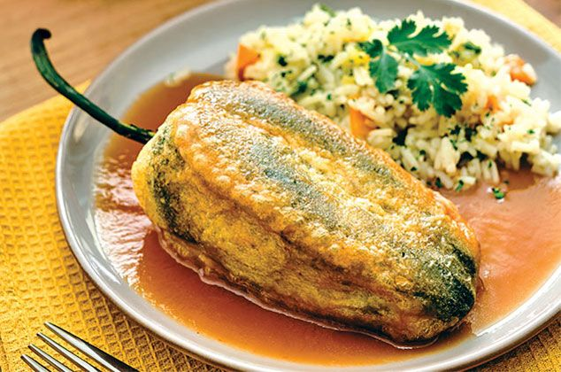

Chiles Rellenos

Ingredientes:
- 6 chiles poblanos
- 300 g de queso Oaxaca o queso fresco (puedes usar queso manchego o queso panela también)
- 4 huevos
- 1 taza de harina de trigo
- Aceite vegetal (para freír)
- 1 diente de ajo
- Sal al gusto
- 1/2 taza de leche (opcional para el capeado)
Ingredientes para la salsa de tomate:
- 4 jitomates grandes
- 1/4 de cebolla
- 1 diente de ajo
- 1 taza de caldo de pollo (o agua)
- Sal y pimienta al gusto
- Aceite vegetal
Instrucciones:
Preparar los chiles:
Asar los chiles poblanos: Coloca los chiles directamente sobre la flama de la estufa o en el horno para asarlos. Gira los chiles hasta que estén completamente ennegrecidos. Esto ayudará a quitarles la piel fácilmente.
Pelar y limpiar: Coloca los chiles asados en una bolsa de plástico o cubre con un paño húmedo durante unos minutos para que "suden". Después de sudar, quita la piel quemada de los chiles. Haz un corte longitudinal en cada chile para retirar las semillas y las venas.
Rellenar: Rellena cada chile con el queso, asegurándote de no romperlos.
Capeado:
Preparar el capeado: Separa las claras de las yemas de los huevos. Bate las claras hasta que estén a punto de nieve (muy esponjosas y firmes). Luego, incorpora suavemente las yemas batidas.
Pasar los chiles por harina: Cubre ligeramente los chiles rellenos con harina, asegurándote de que queden bien cubiertos para que el capeado se adhiera mejor.
Capear los chiles: Sumerge cada chile en la mezcla de huevo batido (capeado).
Freír: En una sartén grande, calienta suficiente aceite para freír. Fríe los chiles capeados por todos lados hasta que estén dorados. Colócalos sobre papel absorbente para eliminar el exceso de aceite.
Salsa de tomate:
Licuar los ingredientes: Licúa los jitomates, el ajo y la cebolla con una taza de caldo de pollo o agua hasta obtener una mezcla suave.
Cocinar la salsa: En una cacerola, calienta un poco de aceite y vierte la mezcla licuada. Cocina a fuego medio durante 10-15 minutos, hasta que la salsa espese un poco. Agrega sal y pimienta al gusto.
Servir:
Montar el plato: Sirve los chiles rellenos con la salsa de jitomate caliente. Puedes acompañarlos con arroz y frijoles refritos.